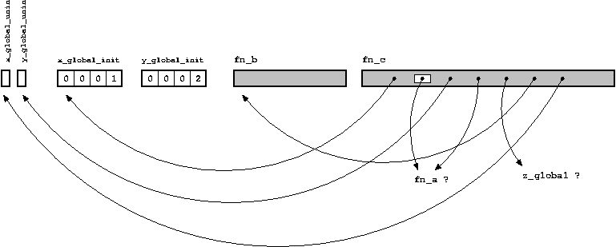

David Drysdale, Beginner's guide to linkers
Перевод
(http://www.lurklurk.org/linkers/linkers.html).
Цель данной статьи — помочь C и C++ программистам понять сущность того, чем занимается компоновщик. За последние несколько лет я объяснил это большому количеству коллег и наконец решил, что настало время перенести этот материал на бумагу, чтоб он стал более доступным (и чтоб мне не пришлось объяснять его снова). [Обновление в марте 2009: добавлена дополнительная информация об особенностях компоновки в Windows, а также более подробно расписано правило одного определения (one-definition rule).
Типичным примером того, почему ко мне обращались за помощью, служит следующая ошибка компоновки:
g++ -o test1 test1a.o test1b.o
test1a.o(.text+0x18): In function `main':
: undefined reference to `findmax(int, int)'
collect2: ld returned 1 exit status
Если Ваша реакция — 'наверняка забыл extern «C»', то Вы скорее всего знаете всё, что приведено в этой статье.
Содержание
Определения: что находится в C файле?
Эта глава — краткое напоминание о различных составляющих C файла. Если всё в листинге, приведённом ниже, имеет для Вас смысл, то скорее всего Вы можете пропустить эту главу и сразу перейти к следующей.
Сперва надо понять разницу между объявлением и определением.
Определение связывает имя с реализацией, что может быть либо кодом либо данными:
Объявление говорит компилятору, что определение функции или переменной (с определённым именем) существует в другом месте программы, вероятно в другом C файле. (Заметьте, что определение также является объявлением — фактически это объявление, в котором «другое место» программы совпадает с текущим).
Для переменных существует определения двух видов:
При этом под термином «доступны» следует понимать «можно обратиться по имени, ассоциированным с переменной в момент определения».
Существует пара частных случаев, которые с первого раза не кажутся очевидными:
Стоит отметить, что, определяя функцию статичной, просто сокращается количество мест, из которых можно обратиться к данной функции по имени.
Для глобальных и локальных переменных, мы можем различать инициализирована переменная или нет, т.е. будет ли пространство, отведённое для переменной в памяти, заполнено определённым значением.
И наконец, мы можем сохранять информацию в памяти, которая динамически выделена по средством malloc или new. В данном случае нет возможности обратится к выделенной памяти по имени, поэтому необходимо использовать указатели — именованные переменные, содержащие адрес неименованной области памяти. Эта область памяти может быть также освобождена с помощью free или delete. В этом случае мы имеем дело с «динамическим размещением».
Подытожим:
|
Код |
Данные | |||||
|
Глобальные |
Локальные |
Динамические | ||||
|
Инициа- лизиро- ванные |
Неинициа- лизиро- ванные |
Инициа- лизиро- ванные |
Неинициа- лизиро- ванные |
|||
|
Объяв-ление |
int fn(int x); |
extern int x; |
extern int x; |
N/A |
N/A |
N/A |
|
Опреде-ление |
int fn(int x) { ... } |
int x = 1; (область действия — файл) |
int x; (область действия — файл) |
int x = 1; (область действия — функция) |
int x; (область действия — функция) |
int* p = malloc(sizeof(int)); |
Вероятно более лёгкий путь усвоить — это просто посмотреть на пример программы.
/* Определение неинициализированной глобальной переменной */
int x_global_uninit;
/* Определение инициализированной глобальной переменной */
int x_global_init = 1;
/* Определение неинициализированной глобальной переменной, к которой
* можно обратиться по имени только в пределах этого C файла */
static int y_global_uninit;
/* Определение инициализированной глобальной переменной, к которой
* можно обратиться по имени только в пределах этого C файла */
static int y_global_init = 2;
/* Объявление глобальной переменной, которая определена где-нибудь
* в другом месте программы */
extern int z_global;
/* Объявлени функции, которая определена где-нибудь другом месте
* программы (Вы можете добавить впереди "extern", однако это
* необязательно) */
int fn_a(int x, int y);
/* Определение функции. Однако будучи помеченной как static, её можно
* вызвать по имени только в пределах этого C файла. */
static int fn_b(int x)
{
return x+1;
}
/* Определение функции. */
/* Параметр функции считается локальной переменной. */
int fn_c(int x_local)
{
/* Определение неинициализированной локальной переменной */
int y_local_uninit;
/* Определение инициализированной локальной переменной */
int y_local_init = 3;
/* Код, который обращается к локальным и глобальным переменным,
* а также функциям по имени */
x_global_uninit = fn_a(x_local, x_global_init);
y_local_uninit = fn_a(x_local, y_local_init);
y_local_uninit += fn_b(z_global);
return (x_global_uninit + y_local_uninit);
}
Что делает C компилятор
Работа компилятора C заключается в конвертировании текста, (обычно) понятному человеку, в нечто, что понимает компьютер. На выходе компилятор выдаёт объектный файл. На платформах UNIX эти файлы имеют обычно суффикс .o; в Windows — суффикс .obj. Содержание объектного файла — в сущности две вещи:
код, соответствующий определению функции в C файле
данные, соответствующие определению глобальных переменных в C файле (для инициализированных глобальных переменных начальное значение переменной тоже должно быть сохранено в объектном файле).
Код и данные, в данном случае, будут иметь ассоциированные с ними имена — имена функций или переменных, с которыми они связаны определением.
Объектный код — это последовательность (подходящим образом составленных) машинных инструкций, которые соответствуют C инструкциям, написанных программистом: все эти if'ы и while'ы и даже goto. Эти заклинания должны манипулировать информацией определённого рода, а информация должна быть где-нибудь находится — для этого нам и нужны переменные. Код может также ссылаться на другой код (в частности на другие C функции в программе).
Где бы код ни ссылался на переменную или функцию, компилятор допускает это, только если он видел раньше объявление этой переменной или функции. Объявление — это обещание, что определение существует где-то в другом месте программы.
Работа компоновщика проверить эти обещания. Однако, что компилятор делает со всеми этими обещаниями, когда он генерирует объектный файл?
По существу компилятор оставляет пустые места. Пустое место (ссылка) имеет имя, но значение соответствующее этому имени пока не известно.
Учитывая это, мы можем изобразить объектный файл, соответствующей программе, приведённой выше, следующим образом:

Анализирование объектного файла
До сих пор мы рассматривали всё на высоком уровне. Однако полезно посмотреть, как это работает на практике. Основным инструментом для нас будет команда nm, которая выдаёт информацию о символах объектного файла на платформе UNIX. Для Windows команда dumpbin с опцией /symbols является приблизительным эквивалентом. Также есть портированные под Windows инструменты GNU binutils, которые включают nm.exe.
Давайте посмотрим, что выдаёт nm для объектного файла, полученного из нашего примера выше:
Symbols from c_parts.o:
Name Value Class Type Size Line Section
fn_a | | U | NOTYPE| | |*UND*
z_global | | U | NOTYPE| | |*UND*
fn_b |00000000| t | FUNC|00000009| |.text
x_global_init |00000000| D | OBJECT|00000004| |.data
y_global_uninit |00000000| b | OBJECT|00000004| |.bss
x_global_uninit |00000004| C | OBJECT|00000004| |*COM*
y_global_init |00000004| d | OBJECT|00000004| |.data
fn_c |00000009| T | FUNC|00000055| |.text
Результат может выглядеть немного по разному на разных платформах (обратитесь к man'ам, чтобы получить соответствующую информацию), но ключевыми сведениями являются класс каждого символа и его размер (если присутствует). Класс может иметь различны значения:
Также можно увидеть символы, которые не являются частью исходного C кода. Мы не будем заострять наше внимание на этом, так как это обычно часть внутреннего механизма компилятора, для того чтобы Ваша программа всё-таки смогла быть потом скомпонована.
докопировать...